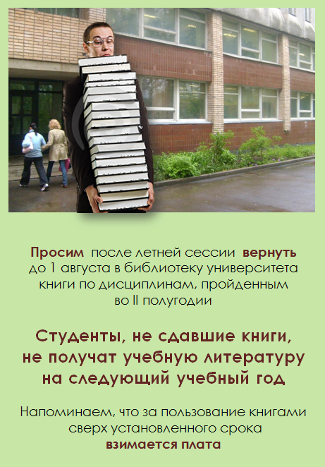

В Год литературы библиотека проведет лекторий «Книжные собрания владельцев смоленских усадеб», задачами которого являются: помощь учебному процессу СмолГУ, привлечение внимания студентов к книге и чтению, популяризация краеведческих знаний в молодежной среде. В основу лекций включены данные о частных коллекциях из имений Смоленской губернии, хранящихся в фонде редкой книги библиотеки.
Информация о лекциях – в разделе «ГОД ЛИТЕРАТУРЫ» на библиотечной странице сайта СмолГУ.


17 февраля 2015 прошла первая лекция из цикла «Книжные собрания владельцев смоленских усадеб» – «Круг чтения владельцев имения Кощино Смоленского уезда Храповицких-Оболенских».
Лекторий посвящен Году литературы, в основе всех его мероприятий – материалы изучения владельческих книжных коллекций из имений Смоленской губернии, хранящихся в ФРК библиотеки.
Студенты познакомились с наиболее яркими образцами из книжной коллекции имения Кощино, краеведческими изданиями по истории усадеб Смоленщины, с разделами каталогов и картотек ИБО в помощь изучению курса «Усадьбоведение».


В Год русской литературы на нашем сайте открылась новая рубрика – «Литературный календарь». Давайте вместе вспомним важные и памятные даты, а также те события, которые, однажды случившись, будут происходить до тех пор, пока мы с вами читаем книги. Вы можете добавить в этот календарь свою любимую дату: наш электронный адрес – в разделе «Контакты».


Ноябрьская выставка поступлений в фонд библиотеки прошла на новом месте. Было представлено 180 наименований книг по различным отраслям знания. Списки новинок всегда направляются на учебные кафедры, однако часть изданий попадёт в те подразделения библиотечного фонда, откуда выдача на дом не предусмотрена. Выставка – прекрасная возможность лично познакомиться с каждой новой книгой. Ждём своих читателей на ежемесячной выставке новых поступлений в фонд библиотеки!
Благодарим БАЖЕНОВУ Екатерину Алексеевну, студентку 1 курса социального факультета (направление подготовки – психология и социальная педагогика) нашего университета, в будущем, уверены, – постоянную читательницу библиотеки, участницу победившей в БД-2014 команды «Всё Гениальное Просто» за небольшую по объёму, но содержательную и очень доброжелательную публикацию в октябрьском номере журнала профкома студентов СмолГУ «В курсе» (№ 8-2014, стр.4) «БИБЛИОТЕЧНЫЙ ДОЗОР - 2014», посвящённую этой полезной и интересной интеллектуально-поисковой игре.

Уважаемые читатели!
Электронно-библиотечная система IPRbooks предоставляет вам доступ к научно-образовательному ресурсу. Уникальная платформа ЭБС IPRbooks объединяет новейшие информационные технологии и учебную лицензионную литературу. Контент ЭБС IPRbooks отвечает требованиям стандартов высшей школы, СПО, дополнительного и дистанционного образования. ЭБС IPRbooks в полном объеме соответствует требованиям законодательства РФ в сфере образования. ЭБС IPRbooks обеспечивает возможность работы с постоянно пополняемой базой лицензионных изданий по широкому спектру дисциплин — учебные, научные издания и периодика, представленная более чем 300 федеральными, региональными и вузовскими издательствами, научно-исследовательскими институтами и ведущими авторскими коллективами. ЭБС IPRbooks предназначена для студентов, аспирантов, преподавателей, научных работников и практикующих специалистов, стремящихся получать знания из качественных лицензионных источников.
Тестовый доступ предоставляется в компьютерном зале библиотеки СмолГУ с 10 ноября по 10 декабря 2014 года

Уважаемые первокурсники!
Библиотека СмолГУ поздравляет вас
с поступлением в университет!
Библиотека СмолГУ – одна из крупнейших вузовских библиотек Смоленска. Она на все годы обучения в вузе будет вашим надежным партнером и помощником, навигатором в огромном потоке информации и поставщиком необходимой литературы, которую вам предстоит использовать в процессе обучения.
Запись в библиотеку,
выдача читательских билетов и учебной литературы
будут проходить в библиотеке по факультетам:
1 сентября – филологический факультет
2 сентября – факультет истории и права
3 сентября – физико-математический факультет
4 сентября – психолого-педагогический факультет, художественно-графический факультет
5 сентября – факультет экономики и управления
8 сентября – естественно-географический факультет
9 сентября – социальный факультет
Время выдачи сообщат деканаты!


С 22 мая в библиотеке СмолГУ (холл 3 этажа) экспонируется выставка «Цвет города», на которой представлен изобразительный материал книги доцента СмолГУ Юлии Грибер и преподавателя Вашингтонского университета (Сиэтл, США) Гелена Майна «Градостроительная живопись: анализ американской и европейской традиций». Эта монография обобщает результаты проведенного авторами при поддержке фонда Фулбрайта сравнительного исследования традиций городской колористики, включившего анализ теории и практики этого раздела архитектуры. Экспонаты выставки – собранные за время исследования схемы, эскизы, зарисовки, графические компьютерные модели и другие иллюстрации, помогающие визуальному восприятию основных положений книги.


С 7 мая в читальном зале естественных наук
библиотеки СмолГУ открыта выставка к юбилею декана
психолого-педагогического факультета,
доктора педагогических наук профессора Е. В. Чмелёвой
«Признание в призвании». Кроме обзора современного
состояния, научных проектов, разработок и
достижений ППФ, на выставке представлены научные
работы юбиляра из фондов библиотеки и личной
коллекции автора, полный список публикаций
Е В. Чмелёвой, а также сборники студенческих научных работ (всего 72 экз.).


Поздравляем ведущего методиста библиотеки СмолГУ Наталью Владимировну ПУХЛЯК,
за большие заслуги в методической и культурно-воспитательной работе
с библиотеками средних специальных учебных заведений ОМО, многолетнее
сотрудничество по вопросам библиотечной работы с юношеством и участие
в системе непрерывного профессионального образования библиотекарей
награждённую Благодарственным письмом ГБУК «Смоленская областная юношеская библиотека»!

Уважаемые преподаватели и студенты!
В компьютерном зале библиотеки СмолГУ вам
предоставляется бесплатный доступ к ЭБС издательства «ЮРАЙТ».
Система дает возможность ознакомиться с современными учебниками, которые соответствуют образовательным стандартам третьего поколения,
а также быстро найти необходимый учебник
по нужным для вас дисциплинам.
Новые технологии получения знаний – для вас!
Библиотека СмолГУ с удовольствием поздравляет свою бывшую читательницу Боровецкую Александру с публикацией в
«Смоленской газете» статьи «Смоленский Андерсен» (№ 43, с. 29).
Сейчас А. Боровецкая состоявшийся педагог, активная участница культурной жизни Смоленска, нашедший первое признание писатель-сказочник. А в 2003 году она получила звание
«Наш любимый читатель» и была в числе победителей организованного в библиотеке конкурса, посвященного Общероссийскому дню библиотек, с одной из своих первых сказок «Тайна вырванных листов».
С 11 по 15 ноября в библиотеке (3 этаж) работает выставка новых поступлений, включающая 216 изданий учебного и научного характера. Для библиотекарей сотрудники ИБО провели обзор представленной литературы. Приглашаем преподавателей и студентов ознакомиться с новыми книгами из библиотечного фонда.
Благодарим наших читателей-студентов
Баклинова В.
,
Илларионова М.,
Можарова И.,
Орлова Н.,
Попова И.,
Эйсмонта Г.,
Шахрова М.,
Якушенко М.
за помощь по переноске тяжелой мебели.


17 октября сотрудники библиотеки приняли участие в проходившей в КВЦ им. Тенишевых презентации вышедших в 2013 году при поддержке Администрации Смоленской области изданий краеведческого характера, подготовленных работниками ОГКУ "Государственный архив Смоленской области". Книги переданы в фонд библиотеки СмолГУ.



Благодарим
заслуженного работника культуры Российской Федерации, лауреата премии Правительства РФ
в области культуры, бывшего директора ОУНБ им. А. Т. Твардовского
Галину Ивановну Артамонову
за прекрасный подарок – книгу «История Смоленской областной универсальной библиотеки
им. А. Т. Твардовского. К 180-летию создания библиотеки».
Многолетнее кропотливое изучение архивных и документальных источников позволило автору
с достаточной полнотой открыть огромный пласт истории как главной библиотеки области,
так и библиотечного дела на Смоленщине в целом, и в частности – библиотеки СмолГУ.
Издание книги осуществлено при финансовой поддержке Администрации Смоленской области.
4 июня группа сотрудников библиотеки во главе с заместителем директора И. Н. Гренковой посетили с экскурсией Национальную библиотеку Беларуси (г. Минск) и приняли участие в проходившем на её базе семинаре «Автоматизация библиотечно-библиографических процессов».
Поздравляем наших читателей-студентов,
правильно ответивших на вопросы
библиотечной викторины!
Ваш приз – неделя (27 мая – 1 июня)
бесплатного ксерокопирования!
1. Беликова М.В., ч/б № 4183, Логопедия
2. Гнедков Е.В., ч/б № 818, История
3. Маричева И.О., ч/б № 9035, ГМУ
4. Митрушина А.С., ч/б № 872, Юриспруденция
5. Петрунина Т.В., ч/б № 826, Юриспруденция
6. Поташов Н.А., ч/б № 879, Юриспруденция
7. Сотченков Р.М., ч/б № 882, Юриспруденция
8. Станулевич М.И., ч/б № 4207, Логопедия
9. Стацурина К.А., ч/б № 267, Английский язык
10. Сухих В.И., ч/б № 886, Юриспруденция
11. Фомин В.И., ч/б № 829, Юриспруденция
12. Шевчукова А.Е., ч/б № 890, Юриспруденция
13. Якимова Т.А., ч/б № 893, Юриспруденция
21 мая, в день рождения писателя
Б. Л. Васильева, зав. ИБО библиотеки СмолГУ
Сивакова Г. Г. выступила с обзором литературы из фондов библиотеки на научно-практической
конференции, посвященной памяти
нашего великого земляка.
С 13.05.13 в читальном зале №3 библиотеки СмолГУ
открыт бесплатный доступк ЭБС издательства «Лань»
- разделы «Химия», «Филология», «Социально-гуманитарные науки».
ЭБС издательства «Лань» включает в себя электронные
версии книг ведущих издательств учебной литературыи
периодических изданий по естественным, техническим и
гуманитарным наукам.
С 08.04.13 по 08.05.13 в читальном зале №3 открыт бесплатный доступ к
ЭБС ZNANIUM.COM.
ЭБС ZNANIUM.COM является самостоятельной разработкой Научно-издательского
центра ИНФРА-М.
ЭБС ZNANIUM.COM — это коллекция электронных версий изданий (книг, журналов, статей и пр.), сгруппированных по тематическим и целевым признакам. В ЭБС реализована система поиска и отбора документов с удобной навигацией, созданием закладок, формированием виртуальных «книжных полок», сервисом постраничного копирования, сбором и отображением статистики использования ЭБС,
а также другими сервисами, способствующими успешной научной и учебной деятельности.
7 февраля 2013 г. годаведущие сотрудники библиотеки присутствовалина организованном ГБУК «Смоленская областная универсальная библиотека им. А.Т. Твардовского» круглом столе «Создание и поддержка сводного электронного каталога библиотек Смоленской области» с участием Соколовой Наталии Викторовны, директора Института корпоративных библиотечно-информационных систем Санкт-Петербургского государственного политехнического университета, и Юдиной Ольги Анатольевны, директора центра электронных ресурсов ОАО «Центр комплектования библиотек «Бибком» (г. Москва).
С 04.02.13 по 14.03.13
в читальном зале №3
открыт бесплатный доступ
к ЭБС издательства «Лань».
ЭБС издательства «Лань» — это ресурс,
включающий в себя как электронные версии
книг издательства «Лань» и других ведущих
издательств учебной литературы, так и электронные
версии периодических изданий по естественным,
техническим и гуманитарным наукам.
27 декабря 2012 г. в холле зального корпуса была представлена
выставка книг из фондов библиотеки СмолГУ «Российская история в
трудах смоленских историков», приуроченная к торжественной церемонии
закрытия Года Российской истории в
Смоленской области.
Выставка «Инязу – 60», посвящённая юбилею отделения иностранных языков филологического факультета, открылась 10.12.12 на 3-м этаже библиотеки.
С 29.11.2012 г. в читальном зале №3 открыт
бесплатный доступ к Polpred.com Обзор СМИ.
Архив важных публикаций собирается
вручную. База данных с рубрикатором: 26 отраслей / 600
источников / 8 федеральных округов РФ / 235 стран и территорий
/ главные материалы / статьи и интервью 3000 первых лиц.
Ежедневно тысяча новостей, полный текст на русском языке,
миллион лучших сюжетов информагентств и деловой прессы за
15 лет. Поиск с настройками. Экспорт в Word сотен статей в
один клик. Интернет-сервисы по отраслям и странам. Доступ
на Polpred.com открыт со всех компьютеров библиотеки и
внутренней сети.
Благодарим
доктора филологических наук,
профессора кафедры английского языка
и методики его преподавания
филологического факультета
Георгия Георгиевича СИЛЬНИЦКОГО
за щедрый дар – научную литературу (52 экз.)
по философии, истории и филологии из личной библиотеки.
В числе переданных библиотеке книг –
знаменитая 16-томная
«История Франции» Анри Мартена 1878 г. издания.
Ждём своих читателей
на ежемесячной выставке новых поступлений
в фонд библиотеки
с 19 по 23 ноября т. г.
Представлено 179 наименований книг
по различным отраслям знания.
Списки новых поступлений будут направлены
на учебные кафедры,
однако часть изданий попадёт в те подразделения библиотечного фонда, откуда не
предусматривается выдача на дом.
Не пропустите возможность
лично познакомиться с каждой новой книгой!
Благодарим нашего читателя,
студента 5 курса специальности «Журналистика»
отделения славянской филологии
филологического факультета нашего университета
Антона Викторовича БУДИНА
за небольшую по объёму, к сожалению –
не свободную от ошибок, но содержательную и очень доброжелательную публикацию
в газете «Смоленские новости»
(№ 72 от 3 ноября 2012 года)
«БИБЛИОТЕКА ИНТЕРНЕТ-ТЕХНОЛОГИЙ»,
посвящённую библиотечной странице
официального сайта СмолГУ.
Напоминаем о необходимости сдать книгу в библиотеку.
Очень признательны также студенткам
4 курса специальности «Журналистика»
отделения славянской филологии
филологического факультета нашего университета
Марии Сергеевне ШКЛЯРОВОЙ и Виктории Сергеевне СИДОРЕНКО
за публикацию
«Библиотека СмолГУ: идём в ногу со временем!»
в газете «Аудитория» (№ 68, ноябрь 2012 – с.3).


{kind=link}
{kind=link}
{kind=link}
{kind=link}
{kind=link}
{kind=link}
{kind=link}
{kind=link}
{kind=link}
{kind=link}
{kind=link}
{kind=link}
{kind=link}
{kind=link}
{kind=link}
{kind=link}
{kind=link}
{kind=link}
{kind=link}
{kind=link}